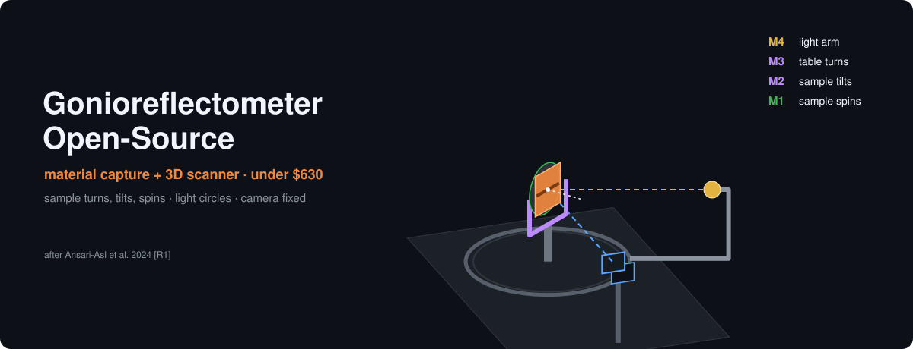
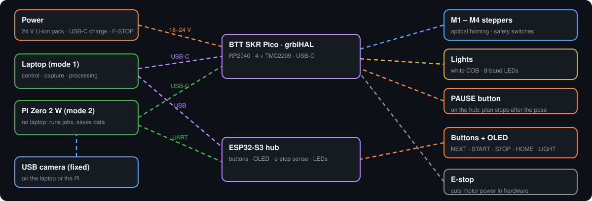
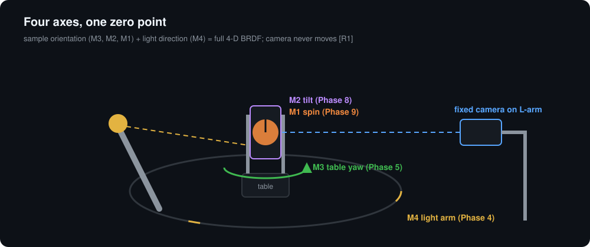

Machine simulator
Drag to orbit. Same kinematics and keep-out model as software/src/opengonio/gantry. Layout after Ansari-Asl et al. 2024 [R1].
Phase 1 specular: M3 = M4 / 2 (M4 ≤ 180°). Light cannot pass the camera (keep-out 30 mm + 5° buffer).
BRDF explorer
In-plane slice of the fitted model (Lambert + GGX + Schlick). Radius ∝ √(fr cos θr).
$$f_r=(1-m)(1-F)\frac{\rho}{\pi}+\frac{D\,G_2\,F}{4\cos\theta_i\cos\theta_r}$$
Equations
CS348b Lecture 10 (Hanrahan) [R2] and the device paper [R1]. Full list with notes: docs/theory.md.
BRDF and reflection equation
$$f_r(\omega_i\to\omega_r)\equiv\frac{dL_r(\omega_i\to\omega_r)}{dE_i}\quad[\mathrm{sr}^{-1}]\qquad L_r(x,\omega_r)=\int_{H^2}f_r(x,\omega_i\to\omega_r)L_i(x,\omega_i)\cos\theta_i\,d\omega_i$$Reciprocity, isotropy, energy
$$f_r(\omega_r\to\omega_i)=f_r(\omega_i\to\omega_r)\qquad f_r(\theta_i,\varphi_i;\theta_r,\varphi_r)=f_r(\theta_i,\theta_r,|\varphi_r-\varphi_i|)\qquad \frac{d\Phi_r}{d\Phi_i}\le 1$$Mirror, Snell, total internal reflection
$$\hat R=\hat I-2(\hat I\cdot\hat N)\hat N\qquad f_{r,m}=\frac{\delta(\cos\theta_i-\cos\theta_r)}{\cos\theta_i}\delta(\varphi_i-\varphi_r\pm\pi)\qquad \eta_i\sin\theta_i=\eta_t\sin\theta_t\qquad 1-\mu^2\big(1-(\hat I\cdot\hat N)^2\big)<0$$Fresnel, Cook-Torrance colour, Lambert
$$F(\theta)=F(0)+(1-F(0))(1-\cos\theta)^5\qquad R=R(0)+R(\tfrac{\pi}{2})\frac{F(\theta)-F(0)}{F(\pi/2)-F(0)}\qquad f_{r,d}=\frac{\rho_d}{\pi}$$Measured quantities [R1]
$$Y^{\mathrm{SVBRDF}}=\mathrm{SVBRDF}(x,y,\theta_i,\varphi_i,\theta_r,\varphi_r,\lambda)\qquad Y^{\mathrm{BTF}}=\mathrm{BTF}(x,y,\theta_i,\varphi_i,\theta_r,\varphi_r,\lambda)$$Kinematics (Tait-Bryan, extrinsic x-y-z) and per-pixel directions [R1]
$$R=R_z(M_3)R_y(-M_2)R_x(M_1)\qquad \omega^s=R^\top\omega^w\qquad \omega_i(p)=\frac{P_L-p}{\|P_L-p\|},\;\omega_r(p)=\frac{P_C-p}{\|P_C-p\|}$$Fixed-camera optics [R1]
$$\frac{1}{p'}-\frac{1}{p}=\frac{1}{f}\qquad m=\frac{p'}{p}\qquad d_{\mathrm{Airy}}=2.44\lambda N\qquad \mathrm{DOF}\approx\frac{2Nc(1+m)}{m^2}$$HDR response (Debevec & Malik) [R5]
$$g(Z_{ij})=\ln E_i+\ln\Delta t_j$$Build plan
Each phase ends with a working instrument and reuses everything before it.



Budget
Cheapest parts by default; prices approximate (checked 2026-10-04). Source: bom/master_bom.csv.

References
Every source is listed with an ID in REFERENCES.md. Key ones:
| ID | Source |
|---|---|
| R1 | Ansari-Asl, Barbieri, Obein, Hardeberg, J. Imaging 10(3):55, 2024 — doi:10.3390/jimaging10030055 |
| R2 | P. Hanrahan, Reflection Models I: Ideal Materials, Stanford CS348b Lecture 10, 2016 |
| R5 | Debevec & Malik, SIGGRAPH 1997 — PDF |
| R6–R8 | Walter et al. 2007 (GGX); Schlick 1994; Cook & Torrance 1982 |
| R20–R30 | FluidNC documentation — wiki.fluidnc.com |
| R73 | KaTeX (equation rendering) — katex.org |